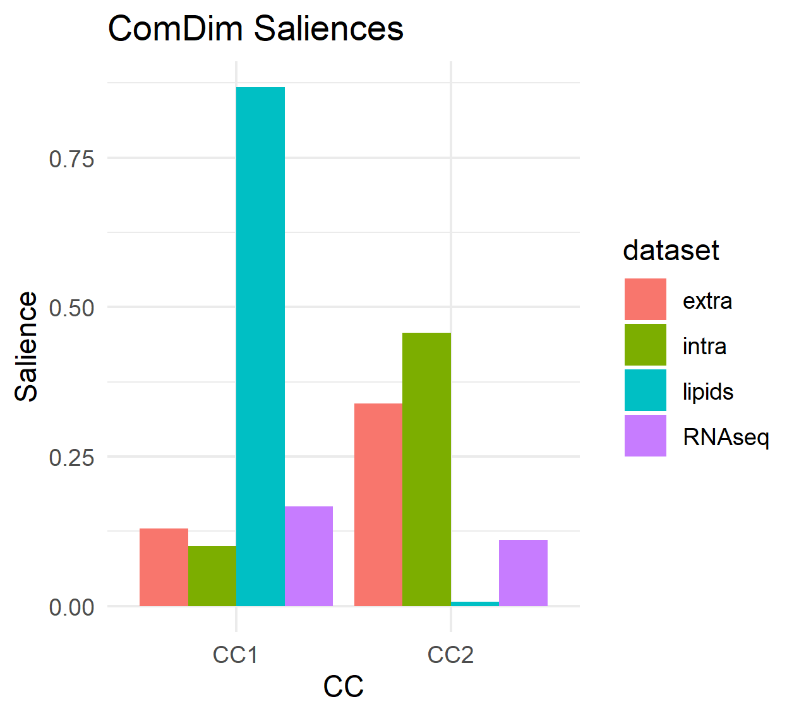
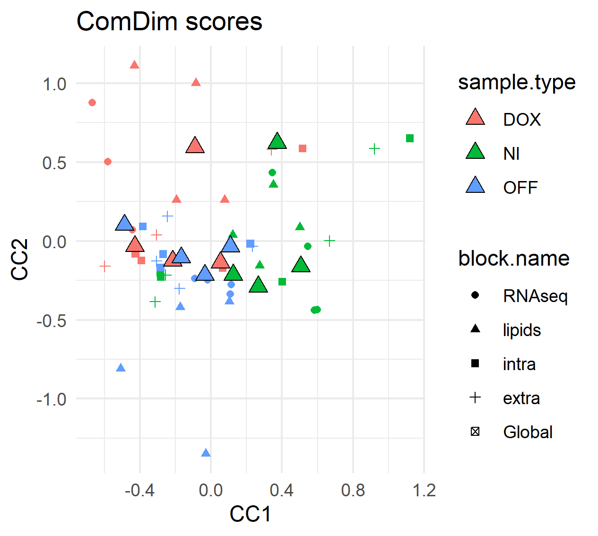

Chapter 5 Multi-omics amd Multi-blocks
This section will be explained with a multi-omics dataset from an exposition experiment on normal and tumoral cells. The dataset contains 4 different types of data (RNAseq, lipidomics, intracellular and extracellular metabolites). The studied samples can be classified into 3 groups:
- NI - non-induced (normal cells)
- DOX - doxycycline induced (tumoral cells),
- OFF - residual cells (treatment-resistant tumoral cells)
More information regarding the experimental protocol can be consulted here. The metabolomics data was downloaded from Metabolights MTBLS1507 while the RNAseq data was obtained from ARRAYEXPRESS E-MTAB-8834.
data(mouse_ds)
allMB <- BuildMultiBlock(t(RNAseq3[,1:12]), t(lipids), t(intra), t(extra))
allMB <- setBlockNames(allMB, c('RNAseq', 'lipids','intra','extra'))5.1 Data processing
This is an example of a possible data processing:
# 1) Exclude normalized variables with max intensity reported below 0.1% of the
# max from all RNAseq blocks.
allMB <- ProcessMultiBlock(
allMB,
blocks = 'RNAseq',
FUN.SelectVars = function(x) {apply(x,2,max) > max(x, na.rm = TRUE) * 0.001})
allMB <- NARemoveMultiBlock(allMB, blocks = 'RNAseq',
method = 'fixed.value.all', constant = 1)
# 2) Do rlog transform of the RNAseq data (rlog assumes samples in columns)
# The rlog transform function is obtained from the DESeq2 R-package.
library(DESeq2)
allMB <- ProcessMultiBlock(allMB, blocks = 'RNAseq',
FUN = function(x){t(DESeq2::rlog(t(x)))})
# 3) Replace NAs by random noise
allMB <- NARemoveMultiBlock(allMB, method = 'random.noise')
# 4) Normalize (mean-center and divided by each block-norm)
allMB <- NormalizeMultiBlock(allMB, method = 'norm')5.2 Data analysis
We use in this example ComDim-PCA, which is intended for exploratory purposes. The ComDim analysis is run with 2 components.
resultsPCA <- ComDim_PCA_MB(allMB, ndim = 2) # 2 Components.resultsPCA is an object of class ComDim.
Let’s proceed now to inspect some of the results from this analysis.
5.2.1 Saliences
We can start by looking at the saliences, which show the contribution of each block for every component.
saliences <- resultsPCA@Saliences %>%
as.data.frame() %>%
mutate(dataset = rownames(.)) %>%
pivot_longer(cols = c('CC1','CC2'),
names_to = 'CC',
values_to = 'Salience')
saliences # The salience values.
ggplot(data = saliences,
aes(x = CC, y = Salience, group = dataset )) +
geom_bar(stat = 'identity', position = 'dodge',
aes(fill = dataset)) +
theme_minimal() +
labs(title = 'ComDim Saliences')
5.2.2 Scores
The scores give the contribution of each sample. There are two types of scores, Global (Q.scores) and Local (T.scores). Global scores show the contribution for the total model (all blocks) while the Local scores give the contribution for each of the blocks.
scoresTable <- MakeComDimScoresTable(model = resultsPCA)
head(scoresTable) # The 6 first rows of the scores table
scoresTable_wider <- scoresTable %>%
mutate(sample.type = case_when(grepl('DOX', sample.id) ~ 'DOX',
grepl('NI', sample.id) ~ 'NI',
grepl('OFF', sample.id) ~ 'OFF')) %>%
dplyr::select(sample.id, sample.type, block.name, scores.type.dim, value) %>%
dplyr::group_by(sample.id, sample.type, scores.type.dim, block.name) %>%
pivot_wider(names_from = scores.type.dim, values_from = value)
ggplot(data = scoresTable_wider) +
geom_point(aes(x = T.scores1, y = T.scores2, color = sample.type,
shape = block.name)) +
geom_point(aes(x = Q.scores1, y = Q.scores2,
fill = sample.type, shape = block.name),
size = 3, shape = 24, color = 'black') +
theme_minimal() +
labs(title = 'ComDim scores', x = 'CC1', y = 'CC2')
# OFF samples are very different than DOX and NI by their lipid content.
# Extracellular metabolites are not very different
5.3 Data prediction
The built model can be used to investigate new samples if available.
pred.resultsPCA <- Predict_MB(MB = allMB, model = resultsPCA)
data.frame(original = resultsPCA@T.scores[[2]][,1],
predicted = pred.resultsPCA@T.scores[[2]][,1])
data.frame(original = resultsPCA@Q.scores[,2],
predicted = resultsPCA@Q.scores[,2])In this example, the original and predicted scores are identical because the new samples are the same as the original ones.